Click on the image above to view the table
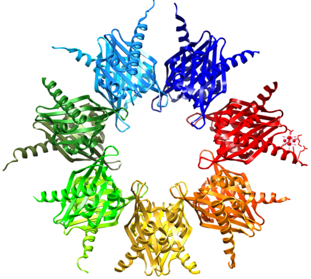
What do you see when you look at this picture? Is it just a mass of tangled ribbons? Look closely. It’s actually a complex pattern of three-dimensional shapes. It represents the structure of a common chemical found inside living cells. The chemical is a protein called hemoglobin. It is the protein in red blood cells which transports oxygen around the body. What are proteins? What other chemicals are found in living things? You will learn the answers to these questions as you read about the chemistry of life.
If you look at your hand, what do you see? Of course, you see skin, which consists of cells. But what are skin cells made of? Like all living cells, they are made of matter. In fact, all things are made of matter. Matter is anything that takes up space and has mass. Matter, in turn, is made up of chemical substances. In this lesson you will learn about the chemical substances that make up living things.
A chemical substance is matter that has a definite composition. It also has the same composition throughout. A chemical substance may be either an element or a compound.
An element is a pure substance. It cannot be broken down into other types of substances. Each element is made up of just one type of atom. An atom is the smallest particle of an element that still has the properties of that element.
There are almost 120 known elements. As you can see from Figure below , the majority of elements are metals. Examples of metals are iron (Fe) and copper (Cu). Metals are shiny and good conductors of electricity and heat. Nonmetal elements are far fewer in number. They include hydrogen (H) and oxygen (O). They lack the properties of metals.
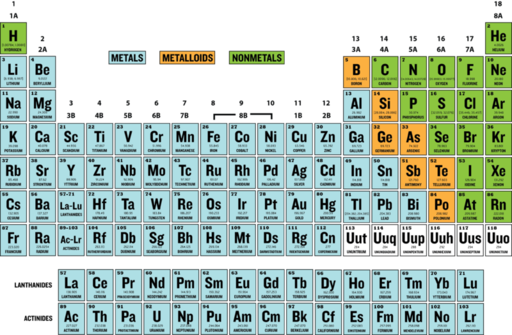
Periodic Table of the Elements. The periodic table of the elements arranges elements in groups based on their properties. The element most important to life is carbon (C). Find carbon in the table. What type of element is it, metal or nonmetal?
A compound is a substance that consists of two or more elements. A compound has a unique composition that is always the same. The smallest particle of a compound is called a molecule. Consider water as an example. A molecule of water always contains one atom of oxygen and two atoms of hydrogen. The composition of water is expressed by the chemical formula H 2 O. A model of a water molecule is shown in Figure below .
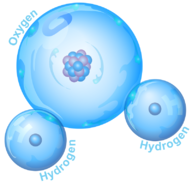
Water Molecule. A water molecule always has this composition, one atom of oxygen and two atoms of hydrogen.
What causes the atoms of a water molecule to “stick” together? The answer is chemical bonds. A chemical bond is a force that holds molecules together. Chemical bonds form when substances react with one another. A chemical reaction is a process that changes some chemical substances into others. A chemical reaction is needed to form a compound. Another chemical reaction is needed to separate the substances in a compound.
A compound found mainly in living things is known as an organic compound . Organic compounds make up the cells and other structures of organisms and carry out life processes. Carbon is the main element in organic compounds, so carbon is essential to life on Earth. Without carbon, life as we know it could not exist. Why is carbon so basic to life? The reason is carbon’s ability to form stable bonds with many elements, including itself. This property allows carbon to form a huge variety of very large and complex molecules. In fact, there are nearly 10 million carbon-based compounds in living things! However, the millions of organic compounds can be grouped into just four major types: carbohydrates, lipids, proteins, and nucleic acids. You can compare the four types in Table below . Each type is also described below.
| Type of Compound | Examples | Elements | Functions |
|---|---|---|---|
| Carbohydrates | sugars, starches | carbon, hydrogen, oxygen | provides energy to cells, stores energy, forms body structures |
| Lipids | fats, oils | carbon, hydrogen, oxygen | stores energy, forms cell membranes, carries messages |
| Proteins | enzymes, antibodies | carbon, hydrogen, oxygen, nitrogen, sulfur | helps cells keep their shape, makes up muscles, speeds up chemical reactions, carries messages and materials |
| Nucleic Acids | DNA, RNA | carbon, hydrogen, oxygen, nitrogen, phosphorus | contains instructions for proteins, passes instructions from parents to offspring, helps make proteins |
The Miracle of Life: Carbohydrates, Proteins, Lipids & Nucleic Acids video can be viewed at http://www.youtube.com/watch?v=nMevuu0Hxuc (3:28).
It may look like waste, but to some people it's green power. Find out how California dairy farms and white tablecloth restaurants are taking their leftover waste and transforming it into clean energy. See From Waste To Watts: Biofuel Bonanza at http://www.kqed.org/quest/television/from-waste-to-watts-biofuel-bonanza for further information.
Carbohydrates are the most common type of organic compound. A carbohydrate is an organic compound such as sugar or starch, and is used to store energy. Like most organic compounds, carbohydrates are built of small, repeating units that form bonds with each other to make a larger molecule. In the case of carbohydrates, the small repeating units are called monosaccharides.
A monosaccharide is a simple sugar such as fructose or glucose. Fructose is found in fruits, whereas glucose generally results from the digestion of other carbohydrates. Glucose is used for energy by the cells of most organisms.
A polysaccharide is a complex carbohydrate that forms when simple sugars bind together in a chain. Polysaccharides may contain just a few simple sugars or thousands of them. Complex carbohydrates have two main functions: storing energy and forming structures of living things. Some examples of complex carbohydrates and their functions are shown in Table below . Which type of complex carbohydrate does your own body use to store energy?
Click on the image above to view the table
For years there's been buzz – both positive and negative – about generating ethanol fuel from corn. But thanks to recent developments, the Bay Area of California is rapidly becoming a world center for the next generation of green fuel alternatives. The Joint BioEnergy Institute is developing methods to isolate biofeuls from the sugars in cellulose. See Biofuels: Beyond Ethanol at http://www.kqed.org/quest/television/biofuels-beyond-ethanol for further information.

Click on the image above for more content
A lipid is an organic compound such as fat or oil. Organisms use lipids to store energy, but lipids have other important roles as well. Lipids consist of repeating units called fatty acids. There are two types of fatty acids: saturated fatty acids and unsaturated fatty acids.
In saturated fatty acids , carbon atoms are bonded to as many hydrogen atoms as possible. This causes the molecules to form straight chains, as shown in Figure below . The straight chains can be packed together very tightly, allowing them to store energy in a compact form. This explains why saturated fatty acids are solids at room temperature. Animals use saturated fatty acids to store energy.
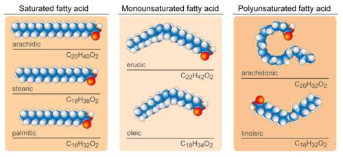
Fatty Acids. Saturated fatty acids have straight chains, like the three fatty acids shown on the left. Unsaturated fatty acids have bent chains, like all the other fatty acids in the figure.
In unsaturated fatty acids , some carbon atoms are not bonded to as many hydrogen atoms as possible. Instead, they are bonded to other groups of atoms. Wherever carbon binds with these other groups of atoms, it causes chains to bend (see Figure above ). The bent chains cannot be packed together very tightly, so unsaturated fatty acids are liquids at room temperature. Plants use unsaturated fatty acids to store energy. Some examples are shown in Figure below .
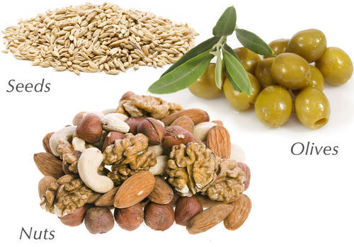
These plant products all contain unsaturated fatty acids.
Lipids may consist of fatty acids alone, or they may contain other molecules as well. For example, some lipids contain alcohol or phosphate groups. They include
A protein is an organic compound made up of small molecules called amino acids . There are 20 different amino acids commonly found in the proteins of living things. Small proteins may contain just a few hundred amino acids, whereas large proteins may contain thousands of amino acids.
When amino acids bind together, they form a long chain called a polypeptide . A protein consists of one or more polypeptide chains. A protein may have up to four levels of structure. The lowest level, a protein’s primary structure, is its sequence of amino acids. Higher levels of protein structure are described in Figure below . The complex structures of different proteins give them unique properties, which they need to carry out their various jobs in living organisms. You can learn more about protein structure by watching the animation at the link below. http://www.stolaf.edu/people/giannini/flashanimat/proteins/protein%20structure.swf
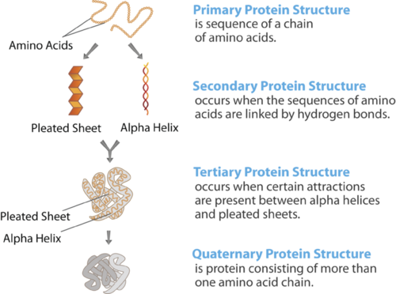
Protein Structure. The structure of a protein starts with its sequence of amino acids. What determines the secondary structure of a protein? What are two types of secondary protein structure?
Proteins play many important roles in living things. Some proteins help cells keep their shape, and some make up muscle tissues. Many proteins speed up chemical reactions in cells. Other proteins are antibodies, which bind to foreign substances such as bacteria and target them for destruction. Still other proteins carry messages or materials. For example, human red blood cells contain a protein called hemoglobin, which binds with oxygen. Hemoglobin allows the blood to carry oxygen from the lungs to cells throughout the body. A model of the hemoglobin molecule is shown in Figure below .
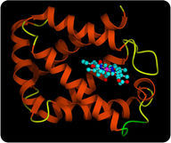
Hemoglobin Molecule. This model represents the protein hemoglobin. The red parts of the molecule contain iron. The iron binds with oxygen molecules.
A short video describing protein function can be viewed at http://www.youtube.com/watch?v=T500B5yTy58 (4:02).
A nucleic acid is an organic compound, such as DNA or RNA, that is built of small units called nucleotides . Many nucleotides bind together to form a chain called a polynucleotide . The nucleic acid DNA (deoxyribonucleic acid) consists of two polynucleotide chains. The nucleic acid RNA (ribonucleic acid) consists of just one polynucleotide chain.
An overview of DNA can be seen at http://www.youtube.com/watch?v=_-vZ_g7K6P0 (28:05).
Click on the image above for more content
Each nucleotide consists of three smaller molecules:
If you look at Figure below , you will see that the sugar of one nucleotide binds to the phosphate group of the next nucleotide. These two molecules alternate to form the backbone of the nucleotide chain. The nitrogen bases in a nucleic acid stick out from the backbone. There are four different types of bases: cytosine, adenine, guanine, and either thymine (in DNA) or uracil (in RNA). In DNA, bonds form between bases on the two nucleotide chains and hold the chains together. Each type of base binds with just one other type of base: cytosine always binds with guanine, and adenine always binds with thymine. These pairs of bases are called complementary base pairs .
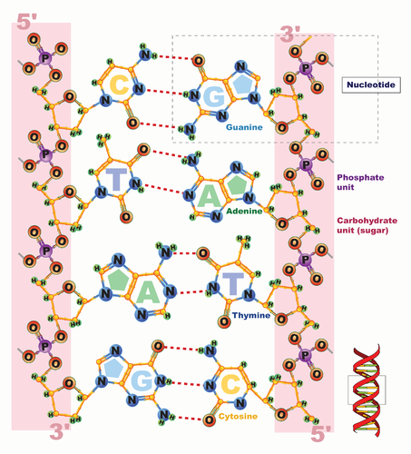
Nucleic Acid. Sugars and phosphate groups form the backbone of a polynucleotide chain. Hydrogen bonds between complementary bases hold two polynucleotide chains together.
The binding of complementary bases allows DNA molecules to take their well-known shape, called a double helix , which is shown in Figure below . A double helix is like a spiral staircase. The double helix shape forms naturally and is very strong, making the two polynucleotide chains difficult to break apart. The structure of DNA will be further discussed in the chapter Molecular Genetics: From DNA to Proteins .

DNA Molecule. Hydrogen bonds between complementary bases help form the double helix of a DNA molecule. The letters A, T, G, and C stand for the bases adenine, thymine, guanine, and cytosine. The sequence of these four bases in DNA is a code that carries instructions for making proteins. Shown is a representation of how the double helix folds into a chromosome.
An animation of DNA structure can be viewed at http://www.youtube.com/watch?v=qy8dk5iS1f0 .
DNA is found in genes, and its sequence of bases makes up a code. Between “starts” and “stops,” the code carries instructions for the correct sequence of amino acids in a protein (see Figure above ). RNA uses the information in DNA to assemble the correct amino acids and help make the protein. The information in DNA is passed from parent cells to daughter cells whenever cells divide. The information in DNA is also passed from parents to offspring when organisms reproduce. This is how inherited characteristics are passed from one generation to the next.
1. What are elements and compounds? Give an example of each.
2. List the four major types of organic compounds.
3. What determines the primary structure of a protein?
4. State two functions of proteins.
5. Identify the three parts of a nucleotide.
6. Butter is a fat that is a solid at room temperature. What type of fatty acids does butter contain? How do you know?
7. Assume that you are trying to identify an unknown organic molecule. It contains only carbon, hydrogen, and oxygen and is found in the cell walls of a newly discovered plant species. What type of organic compound is it?
8. Explain why carbon is essential to all known life on Earth.
9. Compare and contrast the structures and functions of simple sugars and complex carbohydrates.
10. Explain why molecules of saturated and unsaturated fatty acids have different shapes.
Large organic compounds consist of many smaller units that are linked together in chains.
The element chlorine (Cl) is a greenish poison. Would you eat chlorine? Of course not, but you often eat a compound containing chlorine. In fact, you probably eat this chlorine compound just about every day. Do you know what it is? It’s table salt. Table salt is sodium chloride (NaCl), which forms when chlorine and sodium (Na) combine in certain proportions. How does chlorine, a toxic green chemical, change into harmless white table salt? It happens in a chemical reaction.
A chemical reaction is a process that changes some chemical substances into others. A substance that starts a chemical reaction is called a reactant , and a substance that forms as a result of a chemical reaction is called a product . During a chemical reaction, the reactants are used up to create the products.
An example of a chemical reaction is the burning of methane, which is shown in Figure below . In this chemical reaction, the reactants are methane (CH 4 ) and oxygen (O 2 ), and the products are carbon dioxide (CO 2 ) and water (H 2 O). A chemical reaction involves the breaking and forming of chemical bonds. When methane burns, bonds break in the methane and oxygen molecules, and new bonds form in the molecules of carbon dioxide and water.
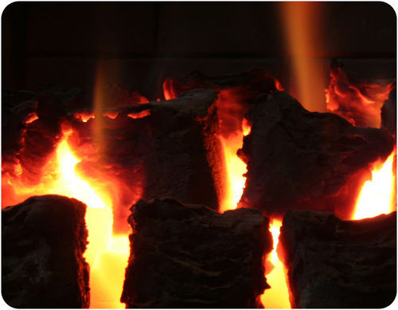
Methane Burning. When methane burns, it combines with oxygen. What are the products of this chemical reaction?
A chemical reaction can be represented by a chemical equation. For example, the burning of methane can be represented by the chemical equation
CH 4 + 2O 2 → CO 2 + 2H 2 O
The arrow in a chemical equation separates the reactants from the products and shows the direction in which the reaction proceeds. If the reaction could occur in the opposite direction as well, two arrows pointing in opposite directions would be used. The number 2 in front of O 2 and H 2 O shows that two oxygen molecules and two water molecules are involved in the reaction. (With no number in front of a chemical symbol, just one molecule is involved.)
In a chemical reaction, the quantity of each element does not change; there is the same amount of each element in the products as there was in the reactants. This is because matter is always conserved. The conservation of matter is reflected in a reaction’s chemical equation. The same number of atoms of each element appears on each side of the arrow. For example, in the chemical equation above, there are four hydrogen atoms on each side of the arrow. Can you find all four of them on each side of this equation?
Chemical reactions always involve energy. When methane burns, for example, it releases energy in the form of heat and light. Other chemical reactions absorb energy rather than release it.
A chemical reaction that releases energy (as heat) is called an exothermic reaction . This type of reaction can be represented by a general chemical equation:
Reactants → Products + Heat
In addition to methane burning, another example of an exothermic reaction is chlorine combining with sodium to form table salt. This reaction also releases energy.
A chemical reaction that absorbs energy is called an endothermic reaction . This type of reaction can also be represented by a general chemical equation:
Reactants + Heat → Products
Did you ever use a chemical cold pack like the one in Figure below ? The pack cools down because of an endothermic reaction. When a tube inside the pack is broken, it releases a chemical that reacts with water inside the pack. This reaction absorbs heat energy and quickly cools down the pack.
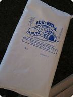
This pack gets cold due to an endothermic reaction.
All chemical reactions need energy to get started. Even reactions that release energy need a boost of energy in order to begin. The energy needed to start a chemical reaction is called activation energy . Activation energy is like the push a child needs to start going down a playground slide. The push gives the child enough energy to start moving, but once she starts, she keeps moving without being pushed again. Activation energy is illustrated in Figure below .
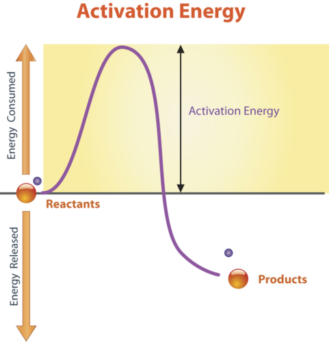
Activation Energy. Activation energy provides the “push” needed to start a chemical reaction. Is the chemical reaction in this figure an exothermic or endothermic reaction?
Why do all chemical reactions need energy to get started? In order for reactions to begin, reactant molecules must bump into each other, so they must be moving, and movement requires energy. When reactant molecules bump together, they may repel each other because of intermolecular forces pushing them apart. Overcoming these forces so the molecules can come together and react also takes energy.
An overview of activation energy can be viewed at http://www.youtube.com/watch?v=VbIaK6PLrRM (1:16).
Biochemical reactions are chemical reactions that take place inside the cells of living things. The field of biochemistry demonstrates that knowledge of chemistry as well as biology is needed to understand fully the life processes of organisms at the level of the cell. The sum of all the biochemical reactions in an organism is called metabolism . It includes both exothermic and endothermic reactions.
Exothermic reactions in organisms are called catabolic reactions . These reactions break down molecules into smaller units and release energy. An example of a catabolic reaction is the breakdown of glucose, which releases energy that cells need to carry out life processes. Endothermic reactions in organisms are called anabolic reactions . These reactions build up bigger molecules from smaller ones. An example of an anabolic reaction is the joining of amino acids to form a protein. Which type of reactions—catabolic or anabolic—do you think occur when your body digests food?
Most biochemical reactions in organisms need help in order to take place. Why is this the case? For one thing, temperatures are usually too low inside living things for biochemical reactions to occur quickly enough to maintain life. The concentrations of reactants may also be too low for them to come together and react. Where do the biochemical reactions get the help they need to proceed? The help comes from enzymes.
An enzyme is a protein that speeds up a biochemical reaction. An enzyme works by reducing the amount of activation energy needed to start the reaction. The graph in Figure below shows the activation energy needed for glucose to combine with oxygen. Less activation energy is needed when the correct enzyme is present than when it is not present. You can watch an animation of a biochemical reaction with and without an enzyme at the link below. This animation shows how the enzyme brings reactant molecules together so they can react: http://www.stolaf.edu/people/giannini/flashanimat/enzymes/prox-orien.swf .
An overview of enzymes can be viewed at http://www.youtube.com/watch?v=E90D4BmaVJM (9:43).
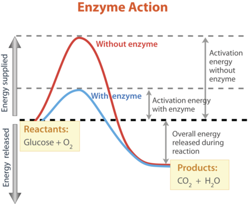
Enzyme Action. This graph shows what happens when glucose combines with oxygen. An enzyme speeds up the reaction by lowering the activation energy. Compare the activation energy needed with and without the enzyme.
Enzymes are involved in most biochemical reactions, and they do their job extremely well. A typical biochemical reaction could take several days to occur without an enzyme. With the proper enzyme, the same reaction can occur in just a split second! Without enzymes to speed up biochemical reactions, most organisms could not survive. The activities of enzymes depend on the temperature, ionic conditions, and the pH of the surroundings. Some enzymes work best at acidic pHs, while others work best in neutral environments.
An animation of how enzymes work can be seen at http://www.youtube.com/watch?v=CZD5xsOKres (2:02).
1. Identify the roles of reactants and products in chemical reactions.
2. What is the general chemical equation for an endothermic reaction?
3. What are biochemical reactions? What is an example?
4. How do enzymes speed up biochemical reactions?
5. What is wrong with the chemical equation below? How could you fix it?
CH 4 + O 2 → CO 2 + 2H 2 O
6. What type of reaction is represented by the following chemical equation? Explain your answer.
2Na + 2HCl → 2NaCl + H 2 + heat
7. How does a chemical equation show that matter is always conserved in a chemical reaction?
8. Why do all chemical reactions require activation energy?
9. Explain why organisms need enzymes to survive.
Most chemical reactions in organisms take place in an environment that is mostly water.
Water, like carbon, has a special role in living things. It is needed by all known forms of life. As you have seen, water is a simple molecule, containing just three atoms. Nonetheless, water’s structure gives it unique properties that help explain why it is vital to all living organisms.
Water is a common chemical substance on planet Earth. In fact, Earth is sometimes called the “water planet” because almost 75% of its surface is covered with water. If you look at Figure below , you will see where Earth’s water is found. The term water generally refers to its liquid state, and water is a liquid over a wide range of temperatures on Earth. However, water also occurs on Earth as a solid (ice) and as a gas (water vapor).
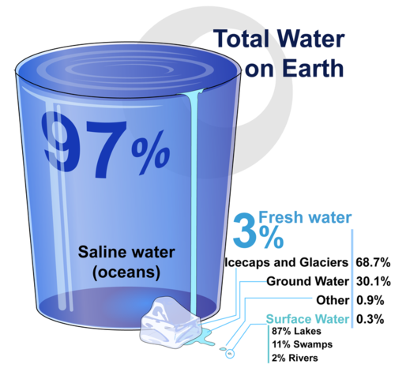
Most of the water on Earth consists of saltwater in the oceans. What percent of Earth’s water is fresh water? Where is most of the fresh water found?
No doubt, you are already aware of some of the properties of water. For example, you probably know that water is tasteless and odorless. You also probably know that water is transparent, which means that light can pass through it. This is important for organisms that live in the water, because some of them need sunlight to make food.
To understand some of water’s properties, you need to know more about its chemical structure. As you have seen, each molecule of water consists of one atom of oxygen and two atoms of hydrogen. The oxygen atom in a water molecule attracts electrons more strongly than the hydrogen atoms do. As a result, the oxygen atom has a slightly negative charge, and the hydrogen atoms have a slightly positive charge. A difference in electrical charge between different parts of the same molecule is called polarity . The diagram in Figure below shows water’s polarity.
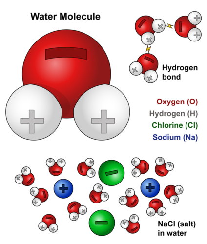
Water Molecule. This diagram shows the positive and negative parts of a water molecule. It also depicts how a charge, such as on an ion (Na or Cl, for example) can interact with a water molecule.
Opposites attract when it comes to charged molecules. In the case of water, the positive (hydrogen) end of one water molecule is attracted to the negative (oxygen) end of a nearby water molecule. Because of this attraction, weak bonds form between adjacent water molecules, as shown in Figure below . The type of bond that forms between molecules is called a hydrogen bond . Bonds between molecules are not as strong as bonds within molecules, but in water they are strong enough to hold together nearby molecules.
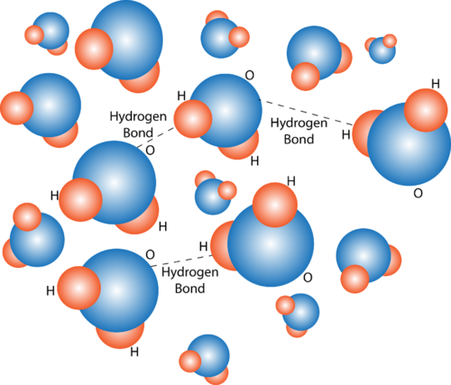
Hydrogen Bonding in Water Molecules. Hydrogen bonds form between nearby water molecules. How do you think this might affect water’s properties?
Hydrogen bonds between water molecules explain some of water’s properties. For example, hydrogen bonds explain why water molecules tend to stick together. Did you ever watch water drip from a leaky faucet or from a melting icicle? If you did, then you know that water always falls in drops rather than as separate molecules. The dew drops in Figure below are another example of water molecules sticking together.
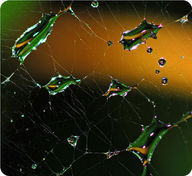
Droplets of Dew. Drops of dew cling to a spider web in this picture. Can you think of other examples of water forming drops? ( Hint: What happens when rain falls on a newly waxed car?)
Hydrogen bonds cause water to have a relatively high boiling point of 100°C (212°F). Because of its high boiling point, most water on Earth is in a liquid state rather than in a gaseous state. Water in its liquid state is needed by all living things. Hydrogen bonds also cause water to expand when it freezes. This, in turn, causes ice to have a lower density (mass/volume) than liquid water. The lower density of ice means that it floats on water. For example, in cold climates, ice floats on top of the water in lakes. This allows lake animals such as fish to survive the winter by staying in the water under the ice.
Water is the main ingredient of many solutions. A solution is a mixture of two or more substances that has the same composition throughout. Some solutions are acids and some are bases. To understand acids and bases, you need to know more about pure water. In pure water (such as distilled water), a tiny fraction of water molecules naturally breaks down to form ions. An ion is an electrically charged atom or molecule. The breakdown of water is represented by the chemical equation
2 H 2 O → H 3 O + + OH -
The products of this reaction are a hydronium ion (H 3 O + ) and a hydroxide ion (OH - ). The hydroxide ion, which has a negative charge, forms when a water molecule gives up a positively charged hydrogen ion (H + ). The hydronium ion, which has positive charge, forms when another water molecule accepts the hydrogen ion.
The concentration of hydronium ions in a solution is known as acidity. In pure water, the concentration of hydronium ions is very low; only about 1 in 10 million water molecules naturally breaks down to form a hydronium ion. As a result, pure water is essentially neutral. Acidity is measured on a scale called pH , as shown in Figure below . Pure water has a pH of 7, so the point of neutrality on the pH scale is 7.
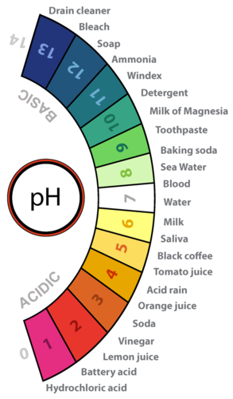
Acidity and the pH Scale. Water has a pH of 7, so this is the point of neutrality on the pH scale. Acids have a pH less than 7, and bases have a pH greater than 7. The approximate pHs of numerous substances is shown.
If a solution has a higher concentration of hydronium ions than pure water, it has a pH lower than 7. A solution with a pH lower than 7 is called an acid . As the hydronium ion concentration increases, the pH value decreases. Therefore, the more acidic a solution is, the lower its pH value is. Did you ever taste vinegar? Like other acids, it tastes sour. Stronger acids can be harmful to organisms. For example, stomach acid would eat through the stomach if it were not lined with a layer of mucus. Strong acids can also damage materials, even hard materials such as glass.
If a solution has a lower concentration of hydronium ions than pure water, it has a pH higher than 7. A solution with a pH higher than 7 is called a base . Bases, such as baking soda, have a bitter taste. Like strong acids, strong bases can harm organisms and damage materials. For example, lye can burn the skin, and bleach can remove the color from clothing.
Acids and bases are important in living things because most enzymes can do their job only at a certain level of acidity. Cells secrete acids and bases to maintain the proper pH for enzymes to work. For example, every time you digest food, acids and bases are at work in your digestive system. Consider the enzyme pepsin, which helps break down proteins in the stomach. Pepsin needs an acidic environment to do its job, and the stomach secretes a strong acid that allows pepsin to work. However, when stomach contents enter the small intestine, the acid must be neutralized. This is because enzymes in the small intestine need a basic environment in order to work. An organ called the pancreas secretes a strong base into the small intestine, and this base neutralizes the acid.
The human body is about 70% water (not counting the water in body fat, which varies from person to person). The body needs all this water to function normally. Just why is so much water required by human beings and other organisms? Water can dissolve many substances that organisms need, and it is necessary for many biochemical reactions. The examples below are among the most important biochemical processes that occur in living things, but they are just two of many ways that water is involved in biochemical reactions.
6CO 2 + 6H 2 O + Energy → C 6 H 12 O 6 + 6O 2
C 6 H 12 O 6 + 6O 2 → 6CO 2 + 6H 2 O + Energy
Water is involved in many other biochemical reactions. As a result, just about all life processes depend on water. Clearly, life as we know it could not exist without water.
1. Where is most of Earth’s water found?
2. What is polarity? Describe the polarity of water.
3. What is the pH of a neutral solution?
4. Describe an example of an acid or a base that is involved in human digestion.
5. Assume that you test an unknown solution and find that it has a pH of 7.2. What type of solution is it? How do you know?
6. How could you demonstrate to a child that solid water is less dense than liquid water?
7. Explain how water’s polarity is related to its boiling point.
8. Explain why metabolism in organisms depends on water.
Most biochemical reactions take place within cells. Cells are the microscopic building blocks of organisms.
Opening image created by CK-12 Foundation from 1hkx.pdb ( http://www.rcsb.org/pdb/explore/explore.do?structureId=1hkx ) using UCSF Chimera ( http://www.cgl.ucsf.edu/chimera ). CC-BY-NC-SA 3.0.
For Table above , from top to bottom:
{kind=link}
{kind=link}